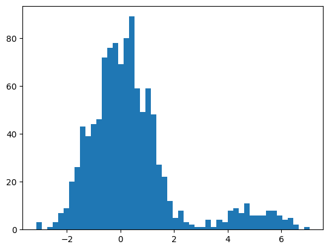

imports
data
| x | y | |
|---|---|---|
| 0 | -0.905509 | A |
| 1 | 0.844968 | A |
| 2 | -0.374190 | A |
| 3 | -1.311042 | A |
| 4 | -1.657453 | A |
| ... | ... | ... |
| 1095 | 4.890136 | B |
| 1096 | 6.158887 | B |
| 1097 | 4.367205 | B |
| 1098 | 4.704626 | B |
| 1099 | 4.428676 | B |
1100 rows × 2 columns
(array([ 3., 0., 1., 3., 7., 9., 20., 26., 43., 39., 44., 46., 72.,
76., 78., 69., 80., 89., 59., 49., 59., 48., 27., 22., 12., 5.,
8., 3., 2., 1., 1., 4., 1., 4., 3., 8., 9., 7., 11.,
6., 6., 6., 8., 8., 6., 4., 5., 2., 0., 1.]),
array([-3.13891042, -2.93493634, -2.73096226, -2.52698818, -2.3230141 ,
-2.11904002, -1.91506594, -1.71109186, -1.50711778, -1.3031437 ,
-1.09916962, -0.89519554, -0.69122146, -0.48724738, -0.2832733 ,
-0.07929922, 0.12467486, 0.32864894, 0.53262302, 0.7365971 ,
0.94057118, 1.14454526, 1.34851934, 1.55249342, 1.7564675 ,
1.96044158, 2.16441566, 2.36838974, 2.57236382, 2.7763379 ,
2.98031198, 3.18428606, 3.38826014, 3.59223422, 3.7962083 ,
4.00018238, 4.20415646, 4.40813053, 4.61210461, 4.81607869,
5.02005277, 5.22402685, 5.42800093, 5.63197501, 5.83594909,
6.03992317, 6.24389725, 6.44787133, 6.65184541, 6.85581949,
7.05979357]),
<BarContainer object of 50 artists>)
CTGAN
# Names of the columns that are discrete
discrete_columns = ['y']
ctgan = CTGAN(epochs=500) # 겁나많이해야하네?
ctgan.fit(df, discrete_columns)
# Create synthetic data
df2 = ctgan.sample(1000)/home/cgb2/anaconda3/envs/ctgan/lib/python3.10/site-packages/rdt/transformers/base.py:132: FutureWarning: Future versions of RDT will not support the 'model_missing_values' parameter. Please switch to using the 'missing_value_generation' parameter to select your strategy.
warnings.warn(